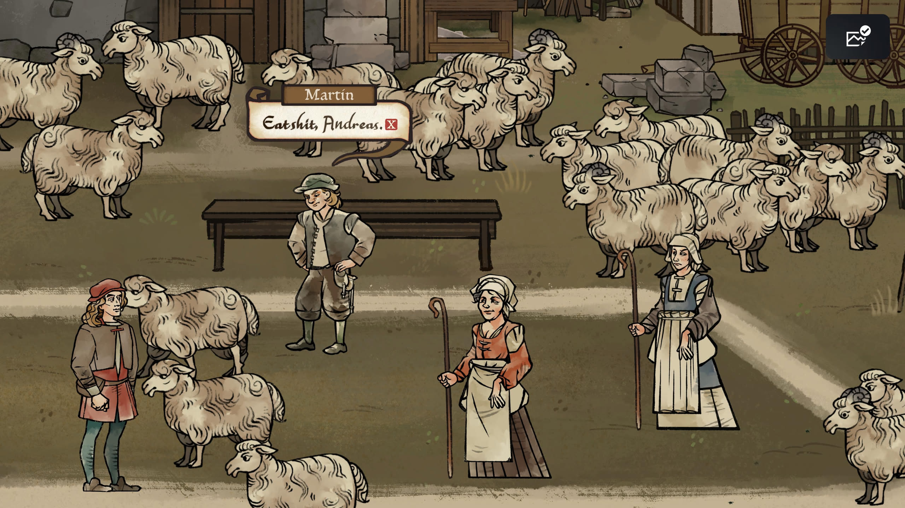
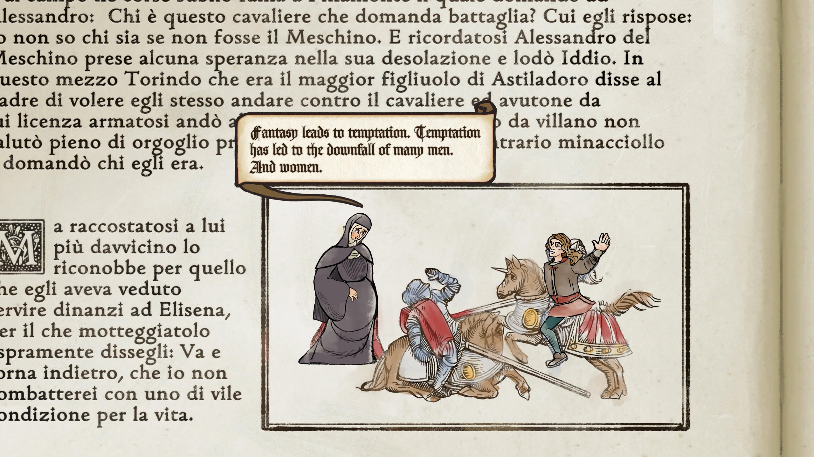
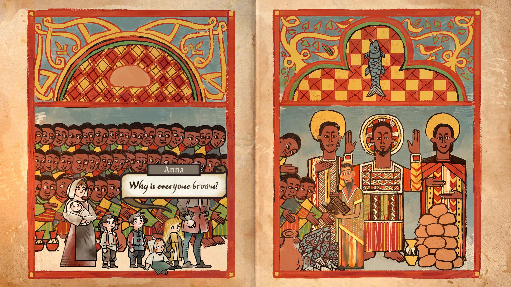

1game1week - Week 2 (1/19/26) - Pentiment
Hey all! It's Week 2! (1/8 -> 1/15) Well... it was, anyway. I'd make excuses like "oh, I've been so busy..." and to be fair, I have been, I'm also just really lazy and have been putting off this post for a little while now. Writing these posts sometimes just takes a while and I can't get myself to dedicate enough time into it. Probably should just try my best to make time. This whole thing is also meant to be a diligence thing, so... You know. I'll make it work. Oh, I should clarify I'm not really apologizing to anyone in particular. Mostly just holding myself accountable because this whole thing is mostly just for me. Went to the doctor recently. It's nothing bad, but since it's the beginning of the year I've been making a lot of appointments for checks, and making sure everything's fine. I've actually not been to the doctor in years, so I figured I might as well. I went to the optometrist, too. Thankfully, I am a nice and healthy boy and that my vision is good. I was told I should probably exercise a bit more though. Also, some prick hit my car while it was parked. I assume they were trying to park and just happen to suck at it. It's not like it's undriveable or anything. It didn't cause any actual damage to the overall function of the car. No note, though. No accountability, no "here's 20 bucks in your windsheld to make up for it". It made me so mad. What kind of person just does that? Can you even call yourself a human? It's messed up. Modern society is just filled with people lacking in values. Sucking at parking and sucking at being a nice person... pick a struggle, dammit! All my grumbling aside...New games from 1/8 -> 1/15: None! (Total 2)
As of 1/15, my yearly backlog is at -3 (lower is better, +-0 since last week). And onto 1g1w. A game is considered "beaten" if I've accomplished the main objective of the game, regardless of how many routes / endings I've achieved. However, it's preferable to get all endings if possible! GAME: Pentiment PLATFORM: PS5 GENRE: Adventure STARTED ON: 1/6 BEATEN ON: 1/10 TOTAL PLAYTIME: 14 hours and 14 minutes I was recommended Pentiment last year by my friend Nadia. Thank you very much for the reccomendation. Pentiment is an narrative adventure RPG set in a mid-1500s Germany, right around the Reformation. You step into the shoes of Andreas Maler, who is an illustrator working in the abbey of a small town called Tassing. You are essentially thrust into a murder mystery scenario where you have to investigate various suspects and find who was responsible. Interestingly enough, these murder investigations are very open-ended. I'm afraid this might be a teensy weensy spoiler, but the game does not make it clear whether you are correct in your assertion of who the killer was. It just has an execution sequence, and finishes up the case. While not necessarily important to the overall narrative, the game's characters treat you differently based on who you choose as the one to be pinned with the murder, which was very interesting to see. The weight of your decisions changes people's lives, even years down the line. Perhaps the absence of a loved one changes how people view your character. Perhaps exposing the corruption of the powerful in society incentivize the weak to revolt. The point is, choices matter and it's incredibly fun to weigh these things as you investigate. It makes it very tempting to replay, just to see what and who can be changed due to your actions. The end of the game and major events probably play out in the same, if not at least in a very similar way.  A fun aspect of this game is that it allows you to choose your character's background and passive skills. For example, you are able to choose where you've been, what languages you know, if you're educated in a certain field such as law or accounting or public speaking. These things unlock different dialogue options or investigative routes, letting you solve the cases or influence people in different ways. The game's aesthetic is a beautiful, beautiful European block print style which blends incredibly well with the narrative and setting. Some characters have different art styles depending on their nationality to match the art style at the time of those specific nations. Phenomenally well done.  It's pretty obvious but I was a fan of the game. It does start out a bit slow, and I was missing a some of both the historical and religious context as religion plays a big part in the game's narrative. That's not to say a few Google searches or short browsing sections can't help you out, but it did make me feel a little bit lost or out of place, especially at the beginning.  My only real complaint about this game is its characters' walking speed and inability to quick travel. As you investigate, you are tasked with going around between the abbey, the forest, the town, and all around. Your character moves at what I'll be honest and say is a snail's pace with no real way for you to do anything but wait until you've arrived. It's not the worst thing in the world, but it definitely stacks up in what is essentially idle time. It's not so bad... at least you're able to look at the beautiful art and environments in the game. I think a fast travel would just be convenient, especially since it drags down the story's pacing a bit with all the walking. This is a minor complaint, however. I truly recommend this game. It's an amazing 14-16 hour adventure that'll keep you on your toes and have you weigh consequences. It's very interesting that there's no "true" ending or that you can save everyone. Your choices matter and you'll have to live with the consequences. I guess that's how life is, right?
 Thanks for reading! If you need to contact me for any reason, please feel free to email me at aru@hoshikawa-aru.com.
Thanks for reading! If you need to contact me for any reason, please feel free to email me at aru@hoshikawa-aru.com.